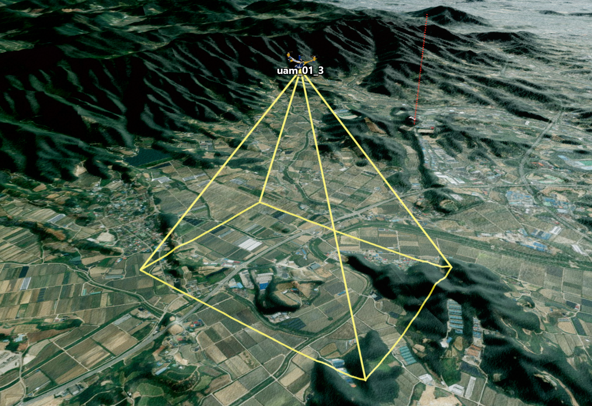
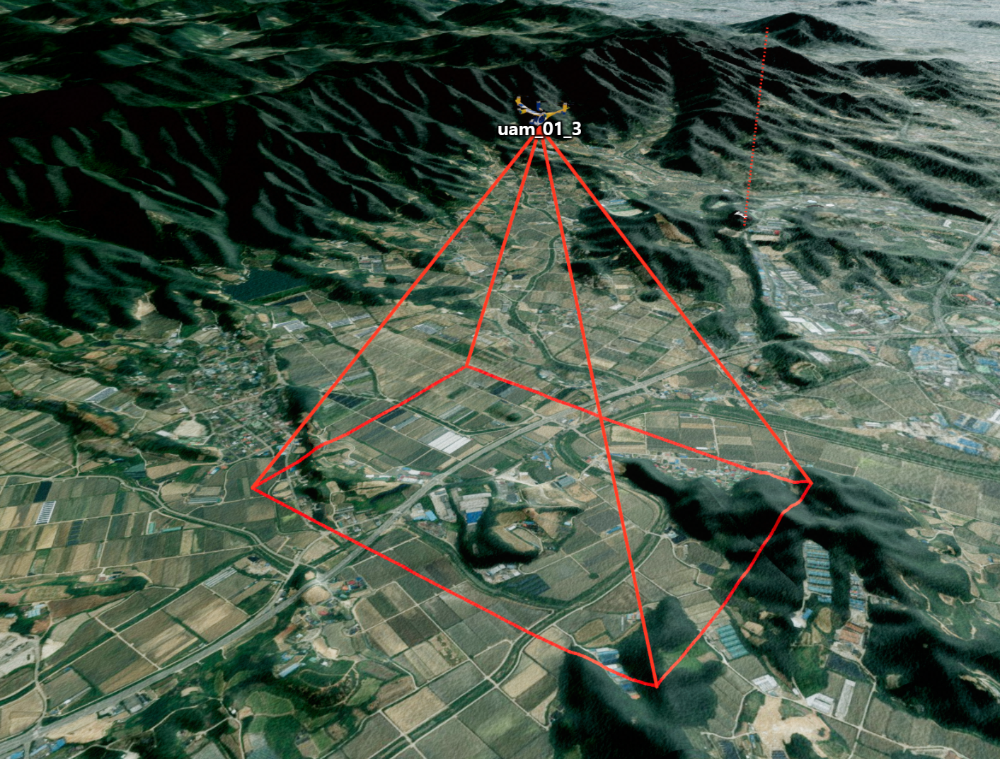
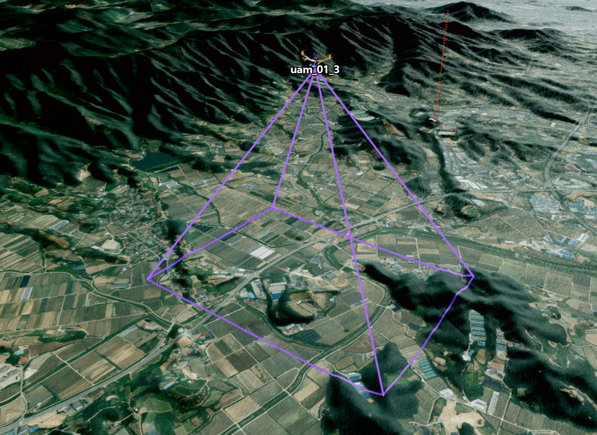
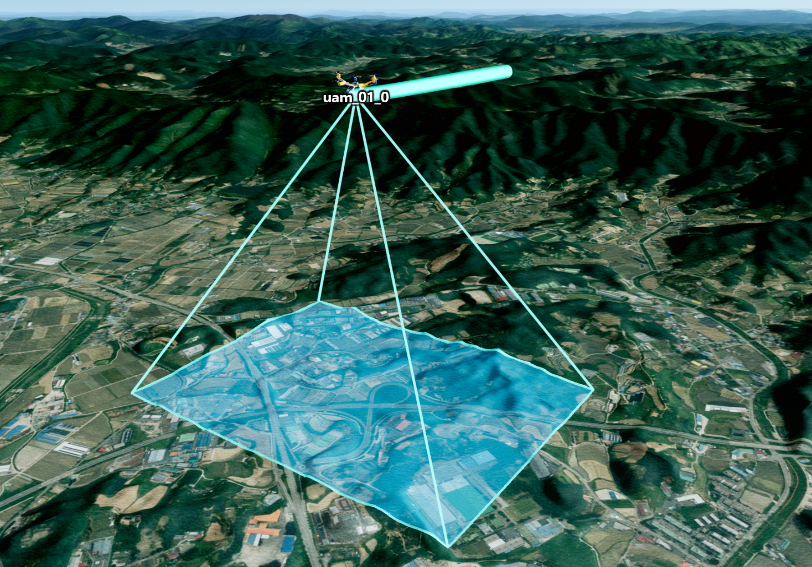
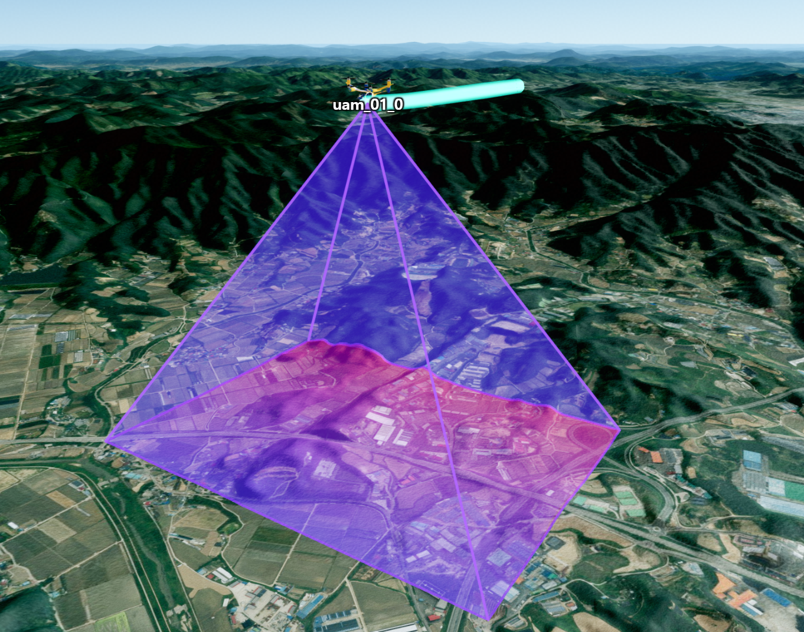
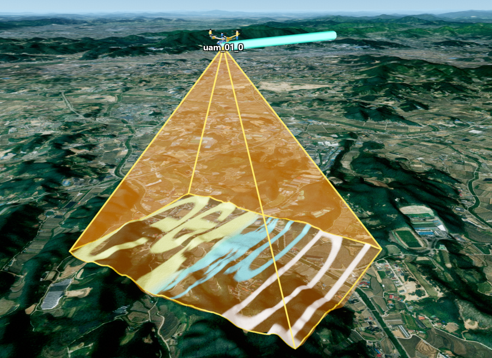
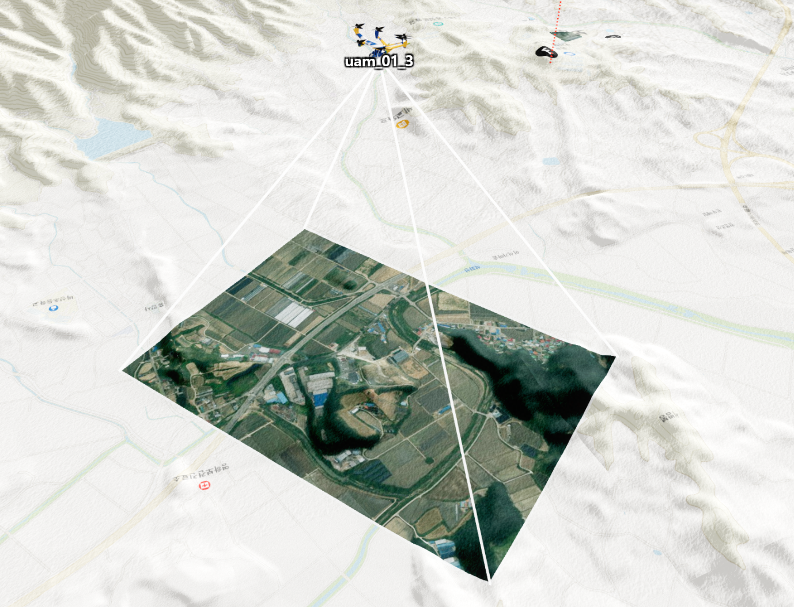

프러스텀 헬퍼 사용하기
목차

프러스텀(frustum)은 카메라에 보이는 공간을 가까운 면과 먼 면으로 나타낸 입체 도형입니다.UFrustumHelper를 사용하면 드론 카메라나 CCTV의 촬영 방향과 범위를 3D 화면에서 확인할 수 있습니다.
이 문서는 카메라 시야 설정이 끝난 UFrustum 객체가 준비되어 있다고 가정합니다.UFrustumHelper로 시야의 외곽선과 지형에 닿는 촬영 영역을 표시하는 방법만 설명합니다.
- near 면: 카메라에서 가장 가까운 촬영 범위입니다.
- far 면: 카메라에서 가장 먼 촬영 범위입니다.
1. 프러스텀 헬퍼 시작하기
시야 설정이 끝난 frustum을 app.setFrustumHelper()에 전달해 헬퍼를 만든 뒤 외부 3D 화면에 추가합니다.
app.setFrustumHelper()는 헬퍼를 생성해서 반환하지만 화면에는 자동으로 추가하지 않습니다.
반환된 헬퍼를 app.getExternalScene().add()로 추가해야 화면에 보입니다.
API
U3dApp.setFrustumHelper(frustum, options) : 입력한 프러스텀을 화면에 그릴 헬퍼를 생성하는 함수
매개변수
frustum(Frustum) : 화면에 표시할UFrustum. 필수options(object) : 선, 면과 지형 표시 옵션
반환값
return(UFrustumHelper | undefined) : 생성된 프러스텀 헬퍼.frustum이 없으면undefined
1. 기본 프러스텀 헬퍼 생성 예제
다음 예제의 frustum은 카메라 시야와 위치, 방향 설정이 끝난 UFrustum 객체입니다.
const helper = app.setFrustumHelper(frustum, {
name: 'cameraUFrustumHelper',
color: '#00ffff',
lineWidth: 3,
opacity: 0.9
});
if (helper) {
app.getExternalScene().add(helper);
}
2. 외곽선 스타일과 표시 상태 변경하기
프러스텀 헬퍼를 만든 뒤에도 외곽선의 색상, 두께와 투명도를 변경할 수 있습니다.setVisible(false)는 외곽선과 촬영 영역을 모두 숨기지만 헬퍼 객체는 삭제하지 않습니다.
API
UFrustumHelper.setColor(color) : 프러스텀 외곽선 색상을 변경하는 함수
매개변수
color(ColorRepresentation) : 변경할 외곽선 색상. 필수



API
UFrustumHelper.setLineWidth(lineWidth) : 프러스텀 외곽선 두께를 변경하는 함수
매개변수
lineWidth(number) : 변경할 선 두께. 기본 설정에서는 CSS 픽셀 단위. 필수
API
UFrustumHelper.setOpacity(opacity) : 프러스텀 외곽선 투명도를 변경하는 함수
매개변수
opacity(number) : 변경할 투명도(0~1). 필수
API
UFrustumHelper.setVisible(visible) : 프러스텀 헬퍼 전체의 표시 여부를 변경하는 함수
매개변수
visible(boolean) :true면 표시하고false면 숨김. 필수
1. 외곽선 스타일과 표시 상태 변경 예제
helper.setColor('#ffff00');
helper.setLineWidth(5);
helper.setOpacity(0.6);
helper.setVisible(false); // 프러스텀 헬퍼 숨기기
helper.setVisible(true); // 프러스텀 헬퍼 다시 표시하기
3. 촬영 영역을 지형에 표시하기
terrain: true로 설정하면 프러스텀의 먼 면을 평평하게 그리지 않고 실제 지형 높이에 맞춰 표시합니다.
이때 fill은 카메라가 촬영하는 영역의 내부를 어떻게 보여 줄지 정하는 핵심 옵션입니다.
촬영 영역의 내부를 보이게 하려면 fill.enabled: true를 반드시 설정해야 합니다.fill을 생략하거나 enabled를 false로 두면 프러스텀 외곽선만 표시되고 내부 영역은 채워지지 않습니다.
1. fill 옵션 이해하기
fill은 다음 네 가지 방식으로 사용할 수 있습니다.
- 단색:
color와opacity로 촬영 영역을 한 가지 색상으로 채웁니다. - 그라데이션:
color와gradientColor사이의 색상 변화를 표시합니다. - 이미지:
texture에 이미지 URL을 넣어 촬영 영역 위에 이미지를 표시합니다. - 마스크:
stampMode: 'mask'와targetLayer를 사용해 촬영 영역 안에서만 특정 영상 레이어를 보이게 합니다.
가장 기본적인 설정은 다음과 같습니다.
fill: {
enabled: true,
color: '#ff55ea',
opacity: 0.28,
stampMode: 'fill'
}
color는 채울 색상이고 opacity는 채운 영역의 투명도입니다.
지형이나 지도 영상이 함께 보여야 한다면 opacity를 0.2~0.4 정도로 낮게 설정하는 것이 좋습니다.
sideColor 또는 sideOpacity를 지정하면 카메라 위치에서 먼 면까지 이어지는 프러스텀 옆면도 함께 표시됩니다.
옆면이 필요하지 않다면 두 옵션을 모두 생략합니다.
texture를 지정하면 단색과 그라데이션보다 이미지가 먼저 적용됩니다.
이미지를 불러오는 동안에는 color가 대신 표시될 수 있으므로 이미지 모드에서도 color를 함께 지정하면 빈 영역이 보이는 것을 줄일 수 있습니다.
stampMode의 기본값은 'fill'입니다.
일반적인 단색·그라데이션·이미지 표시는 'fill'을 사용하고, 특정 레이어의 표시 범위를 제한할 때만 'mask'를 사용합니다.
지형 높이를 자주 확인하므로 sampleSpacing이 너무 작으면 계산량이 늘어납니다.
지형의 굴곡을 더 자세히 표현해야 할 때만 값을 줄입니다.
API
매개변수
- 지형 표시 옵션
options.terrain(boolean) : 먼 면을 지형 높이에 맞춰 표시할지 여부. 기본값:falseoptions.sampleSpacing(number) : 지형 높이를 확인할 좌표 사이의 간격(m). 기본값:10options.smoothing(boolean) : 지형 외곽선의 꺾임을 부드럽게 만들지 여부. 기본값:falseoptions.smoothingIterations(number) : 부드럽게 만드는 계산을 반복할 횟수. 기본값:2options.smoothingFactor(number) : 부드럽게 만드는 강도. 기본값:0.35options.cullByMainCamera(boolean) : 메인 카메라 밖의 헬퍼 계산과 출력을 생략할지 여부. 기본값:true
options.fill.enabled(boolean) : 촬영 영역 내부를 채울지 여부. 기본값:falseoptions.fill.color(ColorRepresentation) : 단색 또는 그라데이션의 시작 색상. 이미지를 불러오기 전에는 대신 표시할 색상으로 사용options.fill.opacity(number) : 단색과 그라데이션의 투명도(0~1). 기본값:0.12options.fill.stampMode(string) : 지형 영역 처리 방식.'fill'또는'mask'. 기본값:'fill'options.fill.maxStampsPerTile(number) : 지형 타일 하나에서 처리할 수 있는 촬영 영역의 최대 개수. 기본값:128options.fill.terrainStampGridSize(number) : 지형과 만나는 촬영 영역을 계산할 격자의 한 변 개수. 기본값:7
options.fill.gradientColor(ColorRepresentation) : 그라데이션에 사용할 두 번째 색상options.fill.gradientDirection(string) : 그라데이션 방향.'vertical'또는'horizontal'. 기본값:'vertical'
options.fill.sideColor(ColorRepresentation) : 프러스텀 옆면 색상.sideColor또는sideOpacity중 하나를 지정하면 옆면을 생성options.fill.sideOpacity(number) : 프러스텀 옆면 투명도(0~1).sideColor또는sideOpacity중 하나를 지정하면 옆면을 생성
options.fill.texture(string) : 촬영 영역에 표시할 이미지 URLoptions.fill.textureOpacity(number) : 이미지 전체 투명도(0~1). 기본값:1options.fill.textureUseAlpha(boolean) : PNG 등 이미지가 가진 투명도를 함께 사용할지 여부. 기본값:trueoptions.fill.textureScale(number) : 이미지가 배치되는 범위를 중심 기준으로 확대하거나 축소하는 배율. 기본값:1options.fill.textureFit(string) : 이미지 배치 방식.'stretch'또는'contain'. 기본값:'stretch'
options.fill.targetLayer(U3dLayer) :stampMode: 'mask'를 적용할 대상 영상 레이어. 마스크 모드에서 사용
maxStampsPerTile을 낮추면 한 타일에서 처리하는 양은 줄지만, 촬영 영역이 많이 겹칠 때 일부 채움이 표시되지 않을 수 있습니다.terrainStampGridSize를 높이면 지형과 만나는 경계를 더 자세히 계산하지만 처리할 좌표도 늘어납니다.
특별히 품질이나 성능을 조절해야 하는 경우가 아니라면 두 옵션은 기본값을 사용합니다.
생성된 헬퍼의 그라데이션 색상과 방향은 실행 중에도 변경할 수 있습니다.
API
UFrustumHelper.setGradientColor(color) : 지형 촬영 영역 그라데이션의 두 번째 색상을 변경하는 함수
매개변수
color(ColorRepresentation | undefined) : 그라데이션 색상.undefined면 그라데이션을 해제
API
UFrustumHelper.setGradientDirection(direction) : 지형 촬영 영역의 그라데이션 방향을 변경하는 함수
매개변수
direction(string) :'vertical'또는'horizontal'. 필수
helper.setGradientColor('#00e5ff');
helper.setGradientDirection('horizontal');
2. 지형 촬영 영역을 단색으로 표시하는 예제
const terrainHelper = app.setFrustumHelper(frustum, {
color: '#00ffff',
lineWidth: 3,
opacity: 0.9,
terrain: true,
sampleSpacing: 5,
fill: {
enabled: true,
color: '#ff55ea',
opacity: 0.28,
sideColor: '#006dff',
sideOpacity: 0.12,
stampMode: 'fill'
}
});
if (terrainHelper) {
app.getExternalScene().add(terrainHelper);
}

3. 지형 촬영 영역에 그라데이션 적용 예제
const gradientHelper = app.setFrustumHelper(frustum, {
terrain: true,
fill: {
enabled: true,
color: '#7c4dff',
gradientColor: '#00e5ff',
gradientDirection: 'vertical',
opacity: 0.3,
stampMode: 'fill'
}
});
if (gradientHelper) {
app.getExternalScene().add(gradientHelper);
}

4. 지형 촬영 영역에 이미지 텍스처 적용 예제
texture에 이미지 URL을 지정하면 단색 대신 이미지를 촬영 영역에 표시할 수 있습니다.textureFit: 'stretch'는 기본 프레임을 기준으로 이미지를 배치하고 촬영 영역 밖을 자릅니다.textureFit: 'contain'은 촬영 영역의 네 꼭짓점에 이미지를 맞추므로 영역 모양에 따라 이미지가 늘어나거나 찌그러질 수 있습니다.
const textureHelper = app.setFrustumHelper(frustum, {
color: '#ffd60a',
lineWidth: 3,
opacity: 0.95,
terrain: true,
fill: {
enabled: true,
sideColor: '#ff9f0a',
sideOpacity: 0.12,
texture: 'image/solution_GeOnDT.png',
textureOpacity: 0.9,
textureUseAlpha: true,
textureFit: 'stretch',
stampMode: 'fill'
}
});
if (textureHelper) {
app.getExternalScene().add(textureHelper);
}

5. 특정 영상 레이어에 촬영 영역 표시 예제
stampMode: 'mask'를 사용하면 프러스텀이 비추는 영역에서만 지정한 영상 레이어가 보이도록 만들 수 있습니다.
const satelliteLayer = app.getLayerByName('satellite');
const maskHelper = app.setFrustumHelper(frustum, {
terrain: true,
fill: {
enabled: true,
color: '#ffffff',
opacity: 1,
stampMode: 'mask',
targetLayer: satelliteLayer
}
});
if (maskHelper) {
app.getExternalScene().add(maskHelper);
app.restartQuadTree();
}

마스크 대상이나 촬영 영역의 표시 방식을 바꾼 뒤에는 app.restartQuadTree()를 호출해 지형 타일에 변경 내용을 다시 반영합니다.
4. 프러스텀 헬퍼 정리하기
이동체를 제거하거나 페이지를 닫을 때 dispose()를 호출해 헬퍼와 헬퍼가 사용한 메모리를 정리합니다.dispose()는 헬퍼를 부모 3D 화면에서 제거하므로 removeFromParent()를 따로 호출하지 않아도 됩니다.
API
UFrustumHelper.dispose() : 프러스텀 헬퍼를 화면에서 제거하고 사용한 메모리와 변경 이벤트를 정리하는 함수
1. 드론의 프러스텀 헬퍼 정리 예제
헬퍼를 이동체의 userData에 저장하면 이동체를 제거할 때 쉽게 찾아서 정리할 수 있습니다.
const HELPER_KEY = 'frustumHelper';
drone.userData[HELPER_KEY] = helper;
function disposeDroneFrustumHelper(drone) {
const helper = drone.userData?.[HELPER_KEY];
if (!helper) return;
helper.dispose();
delete drone.userData[HELPER_KEY];
}
여러 드론을 모두 제거할 때는 각 드론의 헬퍼에 dispose()를 호출한 뒤 컴포넌트를 제거합니다.